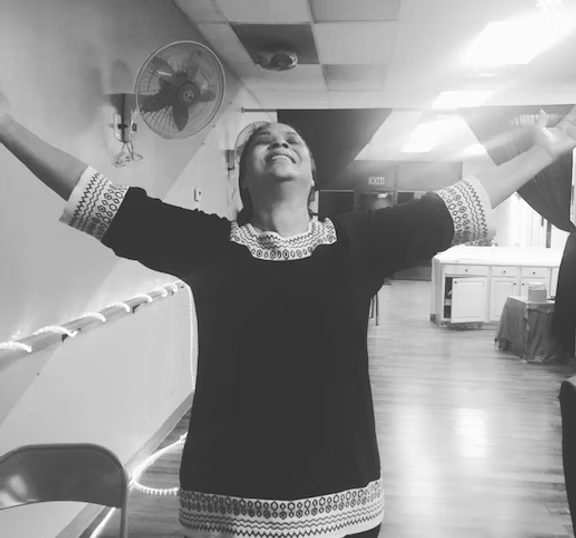

EVENTS & GATHERINGS
There Is a Place for You
Worship with us on Sunday, grow with us on Wednesday, and serve with us all month long.
EVERY SUNDAY · 11:00 AM
Sunday Service
Join us for worship, prayer and a Bible-based message. Come as you are. All are welcomed, and we’re not just church, we’re family.
- When: Sundays at 11:00 AM
- Where: 200 North Cary Street, Brockton, MA 02302
- Online: Watch live on Facebook
- Kids: Hosanna Kids holds its own Sunday kids service
- Monthly: Service Sunday, when we serve our community together


EVERY WEDNESDAY · 7:30 PM
Bible Study
Our weekly Bible study is a safe and supportive place where members connect with one another, study the Bible in depth, ask hard questions and grow in understanding.
- When: Wednesdays at 7:30 PM
- Where: In person at 200 North Cary Street
- Online: Join on Zoom
- Who: Everyone. No experience needed
MORE WAYS TO CONNECT
Other Gatherings
MONTHLY
SUN
SUN
Monthly Service Sunday
Serve our neighbors together. We also sponsor local giveback events.